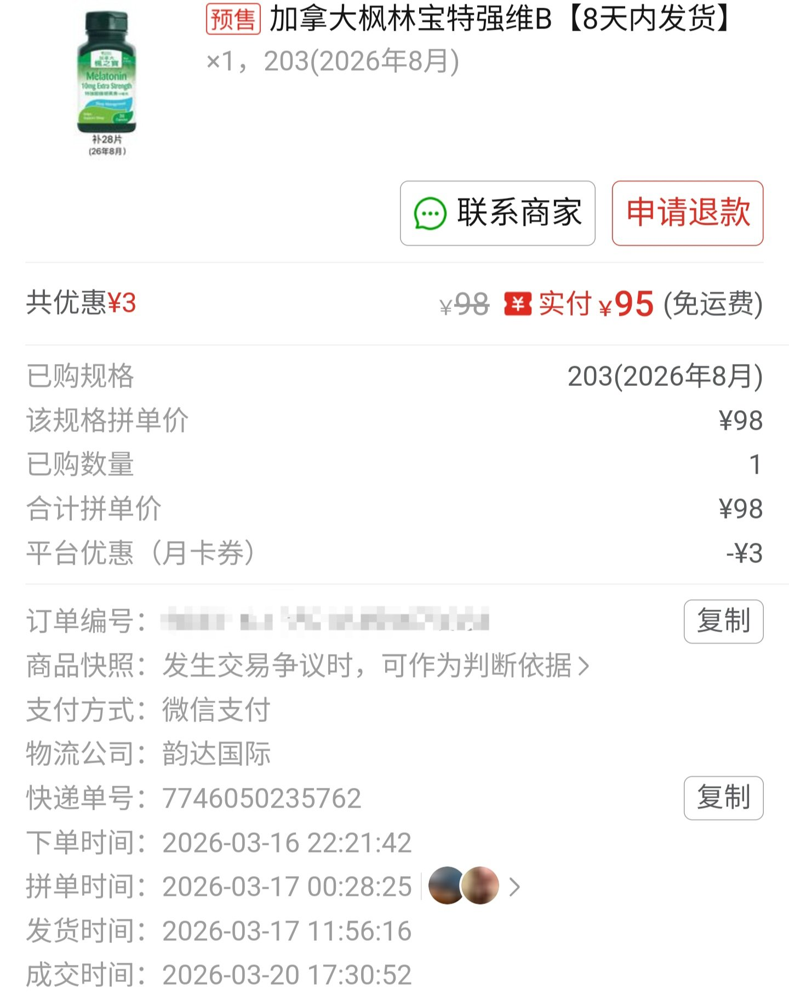
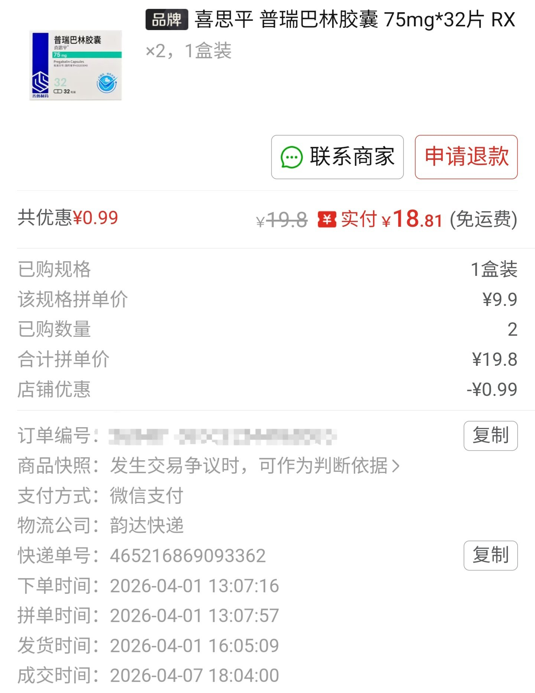

櫻川由奈🏳️⚧️Sakura
@Xiaoyi_0324
這不是什麼破紀錄的挑戰 也不是任何比誰短的比賽 我也不提倡任何人在極短的時間內開啟 hrt
理應充分了解風險以及後果 再做決定 這是最安全的做法 因為 hrt 之後的結果是不可逆的……💔
而且od不和跨圈做任何綁定 不要把這兩個關聯到一起了……😭


KfirC10🍥
@KfirC10SRC
在一个不为人知的角落，其实还有个比unk还神的人，我hrt和od就间隔不到2个星期 https://t.co/IHZSmABIse